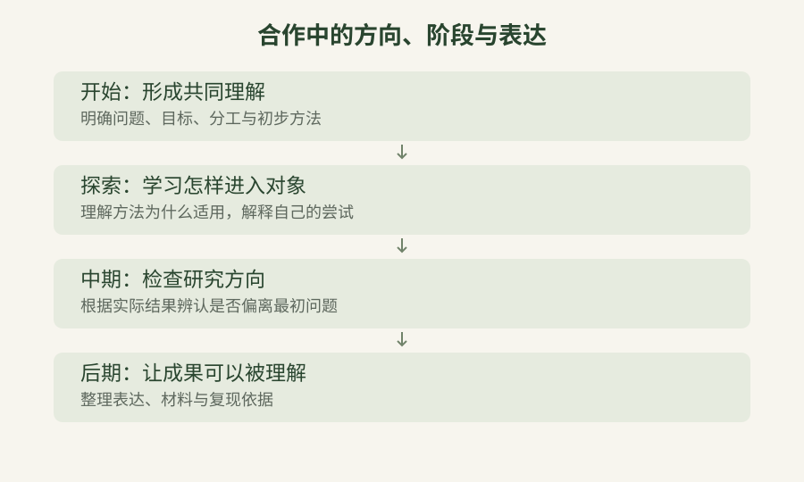

让参与有共同的愿景
一位本科生组长来信，说队伍临时组成，成员不熟悉，开会也不愿参与讨论。我当时建议先建立愿景，不要让同学觉得自己只是在打杂。
如果只知道要清理数据，却不知道数据准备回答什么问题，也不知道自己的判断会影响什么结果，成员就很难看见参与的位置。沉默可能与积极性有关，也可能因为工作只给了他操作要求，没有给他理解和讨论的机会。
我提到，后续可能在指导下形成论文，学生署名应依据工作量和贡献。这能使人看见一个方向，但预期成果不能替代眼前的安排。谁负责哪一部分，完成到什么程度，怎样获得帮助和反馈，仍要具体说明。

我在培训中强调方向明确、指令清晰、目标一致。它们需要落到同一个问题上。只说“把模型做好”，学生可能去追求更高的数值，导师却是在等待更有依据的解释。双方都在忙，实际没有推进同一件事。
要减少这种错位，讨论应让成员讲出自己的理解和已经遇到的困难。初期可以用有限尝试确认问题，中期再根据结果收束路径，后期处理表达与复现。若一次分派就被当成双方已经完全理解，后来出现的新情况便容易成为成员各自消化的负担。
我写过“众人同行，愿为星光”。这份愿望落到团队中，是让成员理解自己的劳动，也能通过提出意见影响工作。共同愿景并非人人说出同一句目标，而是知道自己为何参与、可以承担什么，以及怎样同别人一起把事情向前推进。